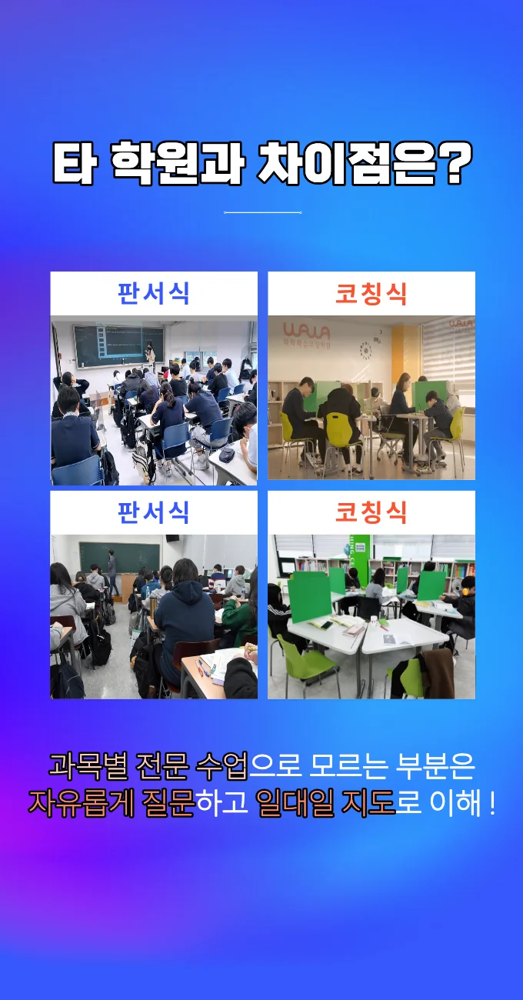
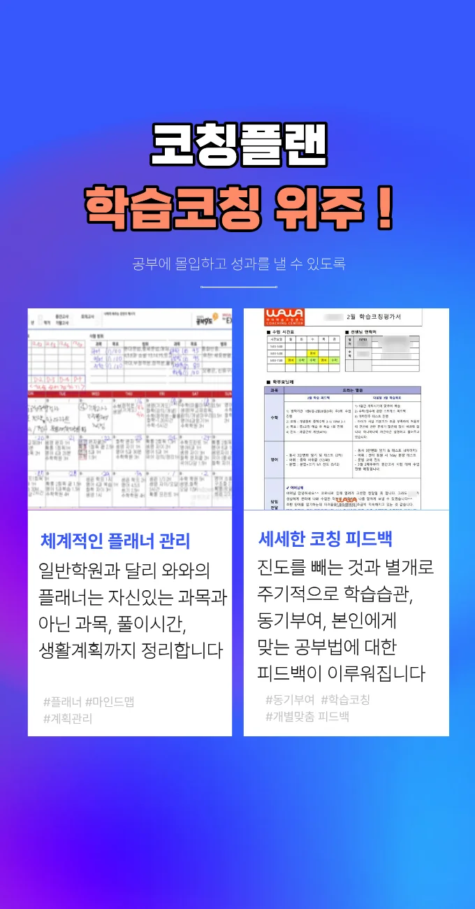
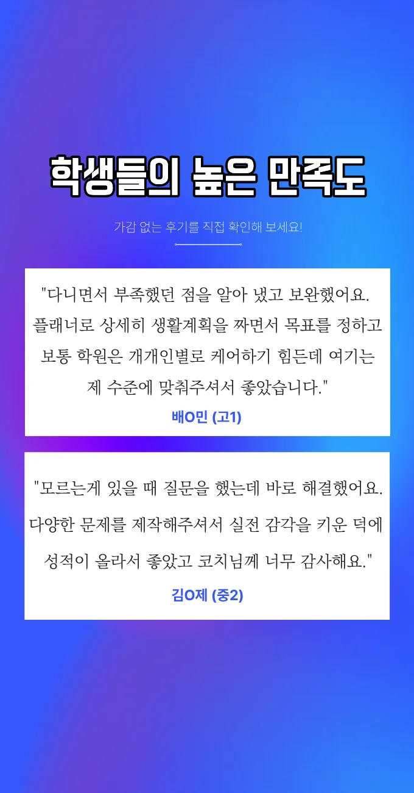

학부모님께서는 운정1동 수능학원을 고를 때 교육 철학이 자녀와 맞는지 먼저 살펴보세요. 선생님들의 강의 스타일이 아이의 학습 습관과 조화를 이루는지 확인해 보세요. 교육 환경이 안전하고 학습에 집중할 수 있게 설계돼 있는지 현장을 직접 방문해 보세요. 교재 선택이 최신 교육 과정과 연계되어 있는지 검증해 보시면 좋습니다. 수업 시간표가 가정 생활과 충돌하지 않도록 유연하게 운영되는지 체크해 보세요. 후기와 입소문을 통해 실제 만족도를 파악하고, 상담 시 구체적인 목표 설정을 요청해 보세요. 비용 대비 효과를 따져볼 때, 추가적인 학습 자료 제공 여부도 중요한 판단 요소가 됩니다. 최종 결정 전에 체험 수업을 경험해 보면 실제 수업 분위기와 교사와의 호흡을 직접 느낄 수 있어요.
이곳 주거 지역의 학생들은 학부모님의 관심이 많아 사교육에 열심인 편이에요. 하지만 정작 학교나 운정1동 수능학원에서 수동적으로 수업을 듣다 보니 혼자서 공부하는 습관이 덜 익숙한 경우가 많더라고요. 계획을 세우려고 해도 실제로 책상에 앉아 공부한 시간을 기록하고 관리하는 것은 어려워해요. 특히 학년이 올라갈수록 스스로 공부해야 할 양이 늘어나는데 이를 감당하지 못해 지치기도 하죠. 그래서 이 지역 아이들에게는 단순 지식 전달보다는 스스로 공부하는 법을 가르쳐 주는 코칭이 정말 필요하다고 생각해요. 아이가 주도적으로 학습할 수 있도록 돕는 환경이 필수적이에요.
와와학습코칭센터는 학생의 학습 태도를 그래프로 시각화해서 보여주는 방식을 사용해요. 아이가 어떤 태도로 공부에 임하는지 눈으로 확인하니 고칠 점이 명확해지거든요. 주로 스스로 공부하는 법을 익혀야 하는 학생들을 대상으로 하고 있어요. 커리큘럼은 수면 이전 정리 루틴을 고정 배치해서 하루를 마무리하는 습관을 들여주고, 한 달에 한 번 전체 범위 모의고사를 풀며 종합 복습을 해요. 수강료는 미술 과정이에요. 미술 에이는 십삼만 원, 미술 비는 십오만 원으로 책정되어 있어서 부담 없이 시작할 수 있어요. 이 운정1동 수능학원을 선택하면 단순히 지식을 주입하는 것을 넘어서 올바른 공부 습관을 확실하게 잡아줘서 장기적으로 성장하는 모습을 볼 수 있어요.
| 학원명 | 와와학습코칭학원 |
| 수강료 | 미술A 130,000원 | 미술B 150,000원 |
CURRICULUM
커리큘럼은 기출 유형별 주의사항 정리를 기본으로 하며, 입체도형의 단면 이해를 통해 시각적 사고를 강화해요. 매주 진행되는 복습 세션에서는 다각형의 내각과 외각을 활용한 문제 풀이를 반복해 학습 내용을 굳히는 전략이 적용돼요. 또한 학부모와의 월간 상담을 통해 학습 흐름을 공유하고 피드백을 반영하는 구조가 특징이에요
운정1동 인근 학생들은 종종 오개념 체크리스트를 반복적으로 활용하지 않아서 성적이 정체되거나 원하는 이등급으로 진입하지 못하는 경우가 많아요. 틀린 개념을 정확히 알고 고쳐야 하는데 그냥 넘어가는 실수를 하거든요. 또한 학습 루틴을 바꾸었을 때 성과가 어떻게 변하는지 비교 분석해 볼 기회를 잘 갖지 못하는 편이에요. 자신의 공부 습관이 점수에 어떤 영향을 주는지 모르면 개선할 방법을 찾을 수 없거든요. 이런 부분을 꼼꼼하게 챙겨주지 않으면 아이가 똑같은 실수를 반복하게 되어 성적이 오르지 않아요. 그래서 자신의 루틴과 성적의 상관관계를 파악할 수 있도록 지원해 주는 것이 무엇보다 중요해요.
이 운정1동 수능학원은 교과 중심 수업과 함께 비교과 활동을 병행해 전인적인 성장 환경을 제공해요. 반복 성공 경험을 기록하고 시각화된 결과를 공유함으로써 학생 스스로 성취감을 느낄 수 있어요. 틀린 문제는 이유를 글로 분석해 적는 습관을 길러, 재발 방지를 도와요. 또한, 문법적 요소를 실제 예문에 적용해 언어 감각을 향상시켜요. 이러한 전략은 학습 동기를 지속시키고 실력 유지에 큰 도움이 돼요. 운정1동의 학부모들은 체계적인 피드백과 구체적인 목표 설정을 높이 평가하고 있어요.
추천 대상은 중학교 2학년으로, 과제 수행은 충실하지만 문제 풀이 속도가 다소 느린 학생이에요. 특히 기출 반복 횟수가 적어 실전 감각이 부족한 경우에 효과적이에요. 이러한 학생들은 맞춤형 피드백과 시간 관리 훈련을 통해 성적 향상을 기대할 수 있어요.
학부모 입장에서 상담 시 미래 학습 로드맵을 구체적으로 제시해 주셔서 큰 안심이 되었어요. 학생은 교사의 열린 소통 태도 덕분에 학습에 대한 두려움이 줄어들고, 스스로 질문을 늘리는 계기가 되었어요. 시험 전 모의고사 해설지는 실전 감각을 키우는 데 큰 도움이 되었고, 문항별 분석 훈련이 실력 향상에 직접적인 영향을 줬어요. 첫 상담에서 진지하게 들어주신 점이 신뢰 형성에 큰 역할을 했어요.

| 학원명 | 와와학습코칭학원 |
| 등록번호 | 제3918호 |